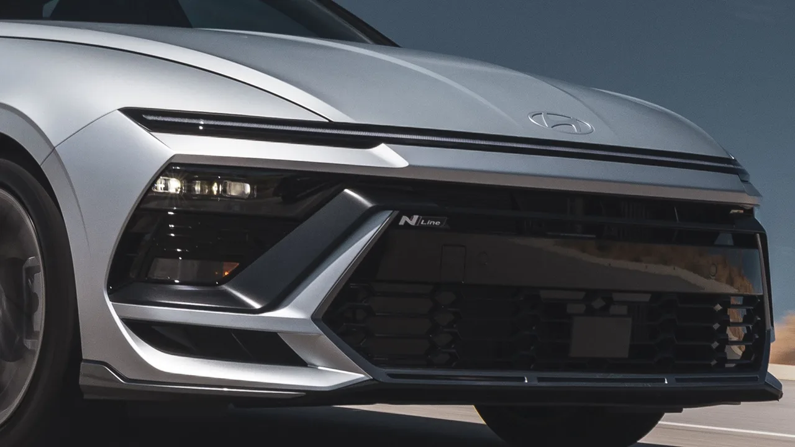
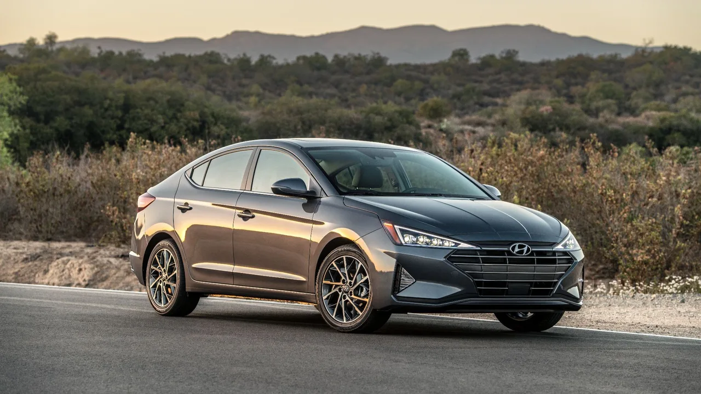
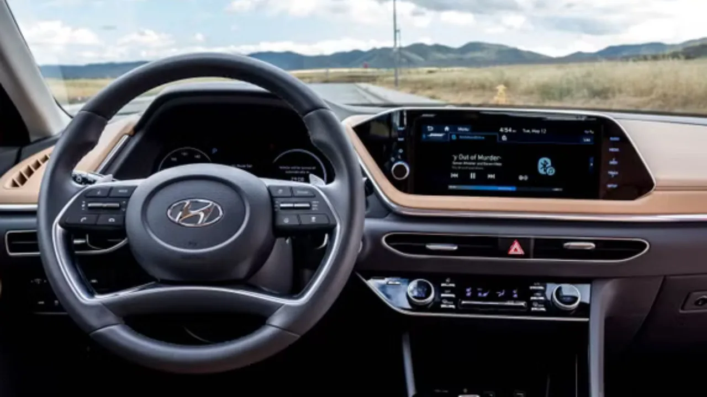
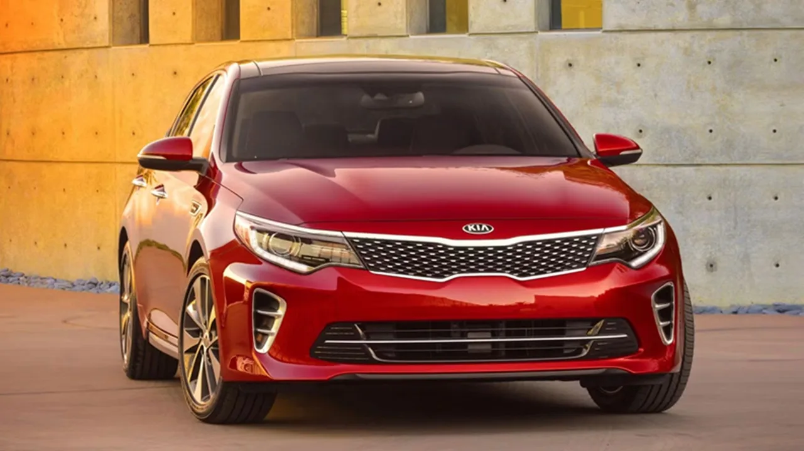

▲ 현대의 10년 파워트레인 보증은 업계 최고 수준이지만, 그 조건에는 단서가 붙어 있다
현대의 보증은 업계에서 가장 후한 축에 듭니다. 10년 파워트레인 보증은 기아와 제네시스까지 함께 적용됩니다.
그런데 단서가 있습니다. 그 10년은 신차를 산 사람의 것입니다. 중고로 사면 파워트레인 보증은 5년으로 줄어듭니다.
1. 신차 구매자가 받는 것
중고 구매자가 무엇을 포기하는지 알려면 원래 무엇이 있었는지부터 봐야 합니다.
| 항목 | 기간 |
|---|---|
| 파워트레인 | 10년 / 10만 마일 |
| EV·하이브리드 배터리 | 10년 / 10만 마일 |
| 범퍼투범퍼 | 5년 / 6만 마일 |
| 24시간 로드사이드 | 5년 / 무제한 |
| 방청(부식) | 7년 / 무제한 |
업계 최고 수준이라는 표현이 과장이 아닙니다. 이 정도 보호를 차를 샀다는 이유만으로 제공하는 제조사는 많지 않습니다.

▲ 보증은 차값에 포함된 가치다. 그 가치가 중고 거래에서 그대로 넘어가지는 않는다 ⓒ CarBuzz
2. 중고로 넘어가는 순간
중고 현대차를 사면 파워트레인 보증은 5년으로 내려갑니다. 그리고 여기서 결정적인 지점이 나옵니다.
그 5년은 최초 판매일 기준입니다. 당신이 산 날이 아닙니다. 즉 5년 된 차를 중고로 사면서 인증중고차가 아니라면, 파워트레인 보증은 이미 끝나 있습니다. 그때부터는 모든 비용이 자기 부담입니다.
| 차량 연식 | 남은 기간 |
|---|---|
| 1년 | 약 4년 |
| 3년 | 약 2년 |
| 5년 | 없음 |
| 7년 | 없음 |
📍 가장 흔한 오해
"현대차는 10년 보증이니까 중고로 사도 한참 남았겠지"가 가장 흔한 오해입니다.
실제로는 기간이 절반으로 줄고, 시계는 이미 돌아간 상태입니다. 두 가지가 동시에 적용되기 때문에 체감 차이가 큽니다.
3. 인증중고차라면 다릅니다
예외는 인증중고차(CPO)입니다. 제조사 인증 절차를 거친 차량은 별도의 보증 조건이 붙습니다.
중고 현대·기아를 알아보고 있다면, 같은 연식·같은 주행거리라도 인증중고차인지 아닌지가 실질 가치를 크게 가릅니다. 가격 차이가 그 보증값이라고 보면 계산이 쉬워집니다.

▲ 같은 연식이라도 인증 여부에 따라 남아 있는 보증이 달라진다 ⓒ CarBuzz
4. 구매 전 확인 순서
중고차 계약 전에 확인할 것은 세 가지입니다.
| 순서 | 내용 |
|---|---|
| 1 | 차량의 최초 판매일 — 연식이 아니라 실제 등록일 |
| 2 | 인증중고차 여부 |
| 3 | 누적 주행거리 — 기간과 거리 중 먼저 도달하는 쪽이 만료 시점 |
보증은 기간과 주행거리 가운데 먼저 도달하는 쪽에서 끝납니다. 연식이 짧아도 주행거리가 많으면 남은 보증이 짧습니다.

▲ 보증 잔여 기간은 실내 상태보다 계약에 더 큰 영향을 준다 ⓒ CarBuzz
5. 국내 조건은 따로 확인해야 합니다
여기까지는 미국 시장 기준입니다. 현대·기아의 10년 파워트레인 보증은 북미에서 특히 강조되는 조건입니다.
국내 보증 조건은 시장별로 다르게 운영되므로, 국내 중고차를 살 때는 제조사 국내 보증 정책과 승계 조건을 별도로 확인해야 합니다. 다만 "보증이 남았는지 계약 전에 확인한다"는 원칙 자체는 어느 시장에서나 같습니다.

▲ 보증 조건은 브랜드가 아니라 개별 차량의 이력에 붙는다 ⓒ CarBuzz
6. 요약
보증은 브랜드에 붙는 것이 아니라 차 한 대에 붙습니다. 그리고 그 차가 몇 번째 주인을 맞았는지에 따라 조건이 달라집니다.
중고차 가격표에는 이 차이가 표시되지 않습니다. 같은 값처럼 보이는 두 대의 실제 가치가 다를 수 있다는 뜻입니다.